자정 무렵 · 신문사 식자실활자 「ㄱ」이 또 없어졌다!
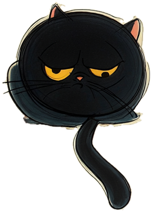
…ㄱ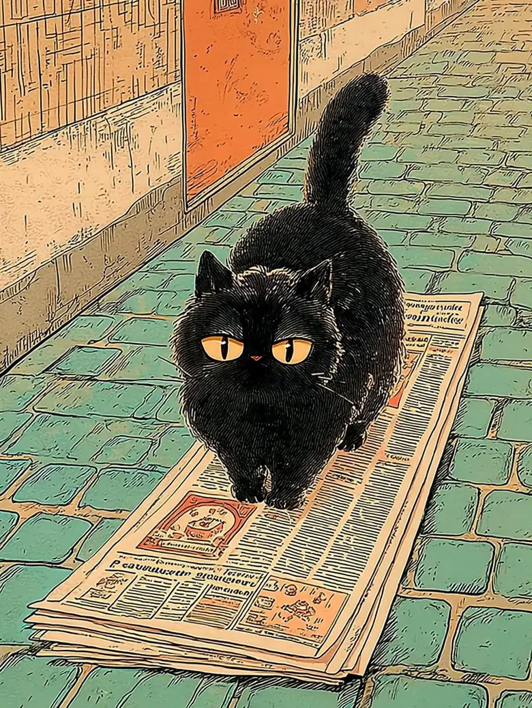
다음 날 광고면사람을 차즘수배 제268호현상금 · 멸치 한 줌
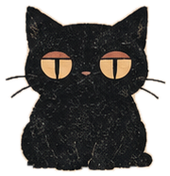
꼬리랑 닮앗길래 가져갓소.그게 죄요?
설정 · 지어낸 이야기
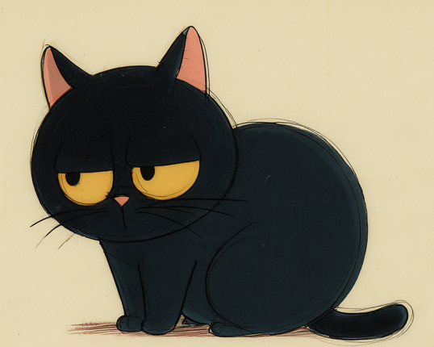

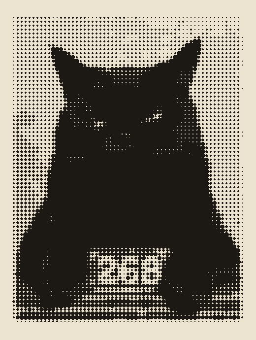
까만 고양이 한 마리. 보신 분은 알려 주시오.
그 고양이가, 오늘 경성을 걷소.
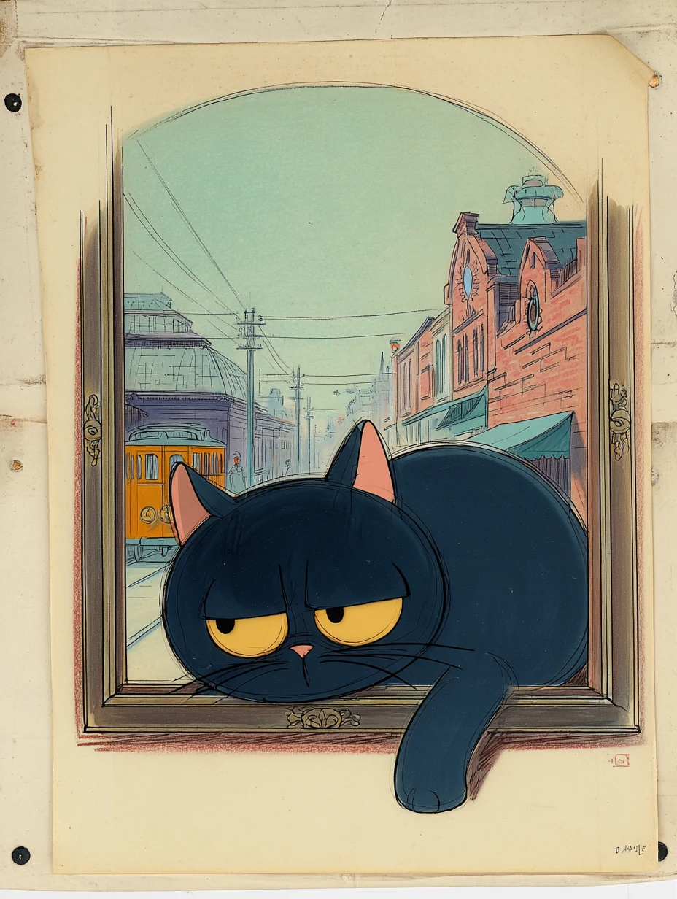
그림 · 재현1899 — 1937 · 경성 여덟 곳
「따라오든지 말든지. …따라오시오.」
광고면 수배지에서 달아난 까만 고양이 심묘. 글을 모르는 이 고양이의 눈높이로 1899년부터 1937년까지 경성 여덟 곳을 걷습니다. 고양이에게는 벽보도 간판도 다 흰 종이입니다. 사람 눈으로 바꿔 보면, 그 자리에 진짜 그 시절 지면이 열립니다.
오늘의 심묘 점괘
그림은 모두 재현입니다. 장소 · 연도 · 지면 · 출처는 사실입니다.
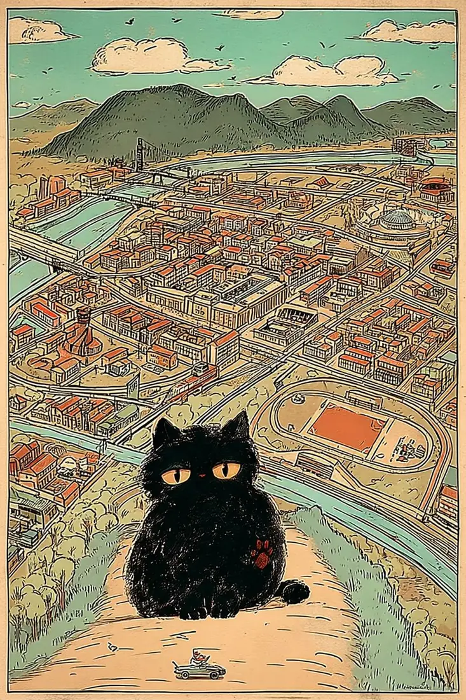
그림 · 재현「오늘은 어디 냄새가 나는지 보오.」
도장첩
주머니 · 빠진 글자
지도는 그림이라 자리가 대강입니다. 순서 없이 골라 걸으세요. 여덟 곳 도장을 다 모으거나 밤 12시에 오면 ★ 자리가 열립니다.
그림 속 반짝이는 자리를 눌러 보세요. 두 가지만 열어도 도장이 찍힙니다.
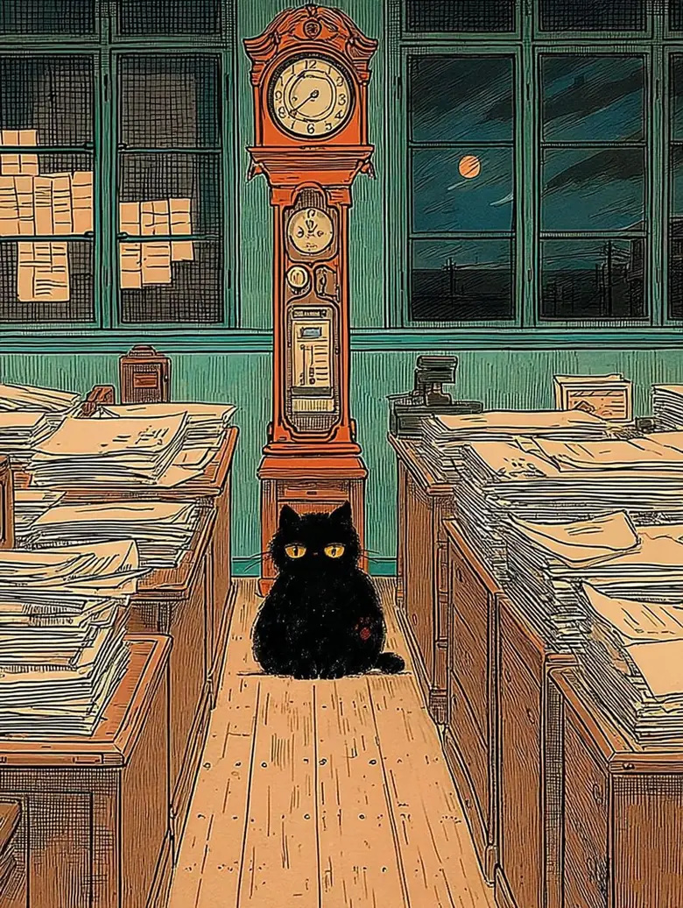
그림 · 재현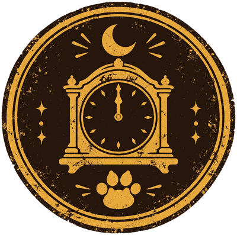
문이 아직 닫혀 있습니다.
여덟 곳 발바닥 도장을 다 모으거나, 진짜 밤 12시(00:00 ~ 00:59)에 다시 오세요.
지금 모은 도장 0/8
미리 보기입니다. 직접 걸으면 여덟 곳에서 글자를 하나씩 모아 이 문장을 완성합니다.
「늦엇구려. 나는 늘 여기 잇섯소.」
모은 글자를 순서대로 눌러 칸에 놓으세요. 칸 아래 도장이 그 글자를 준 곳입니다.
심묘는 오늘도 잇소.
수배 제268호 · 풀린 수수께끼
이 지면을 읽어 보세요.
읽을 수 없지요. 심묘의 눈에는 이 지면이 이렇게 보였습니다.
78%
그 시절 많은 사람에게 경성은 — 방금 심묘가 걸은, 흰 종이의 거리였습니다.
산책 선물
내일도 산책하겟소.
오려 둔 잡지 한 쪽
첫째 날
둘째 날
산책 선물
멸치를 모으면 하나씩 열립니다. 눌러서 내려받으세요.
심묘한 산책 · 연재 만화

…ㄱ
다음 날 광고면사람을 차즘수배 제268호
꼬리랑 닮앗길래 가져갓소.설정 · 지어낸 이야기
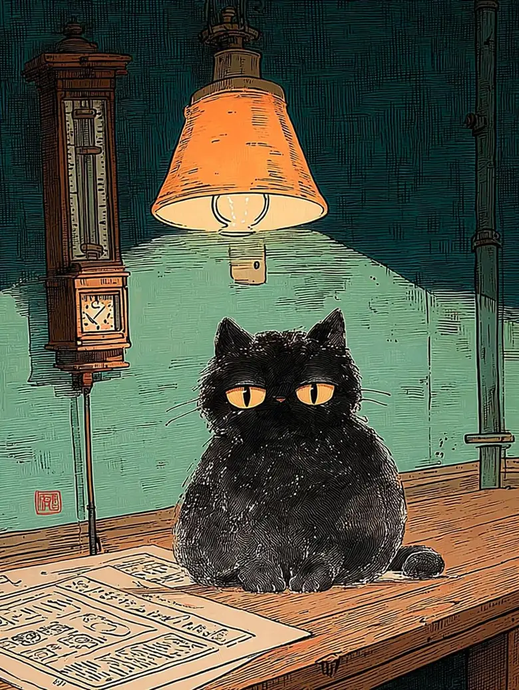
최고참 식자공의 말내가 견습일 때도 저 놈이 저 의자에 있었어.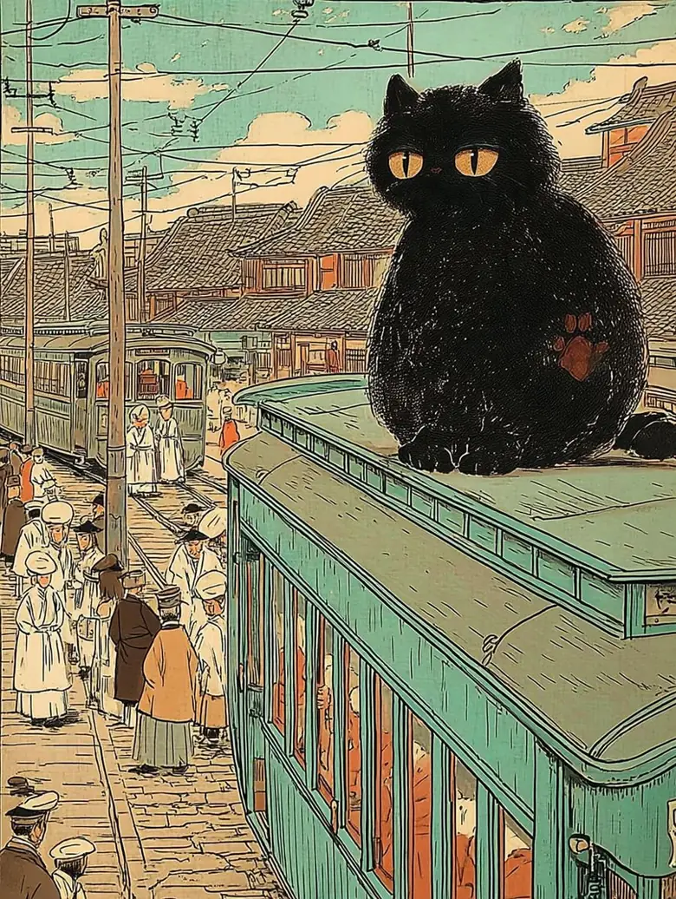
1899년 첫 전차 그림 속에도…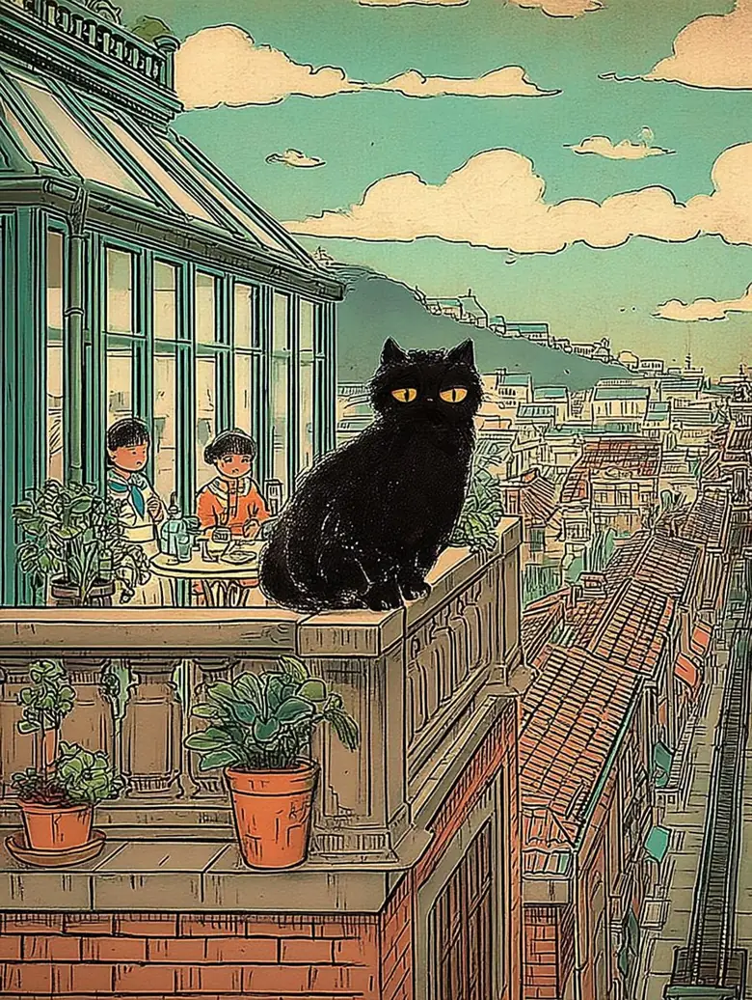
1930년 백화점 옥상 그림 속에도…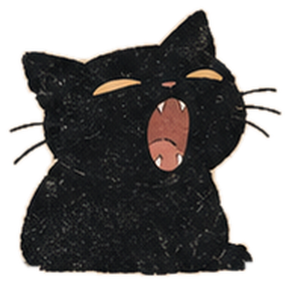
나이는 묻지 마시오.설정 · 지어낸 이야기
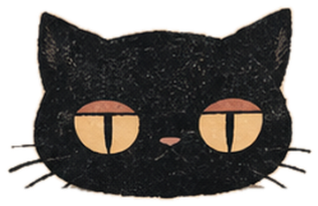
첫째 목숨빗자루다!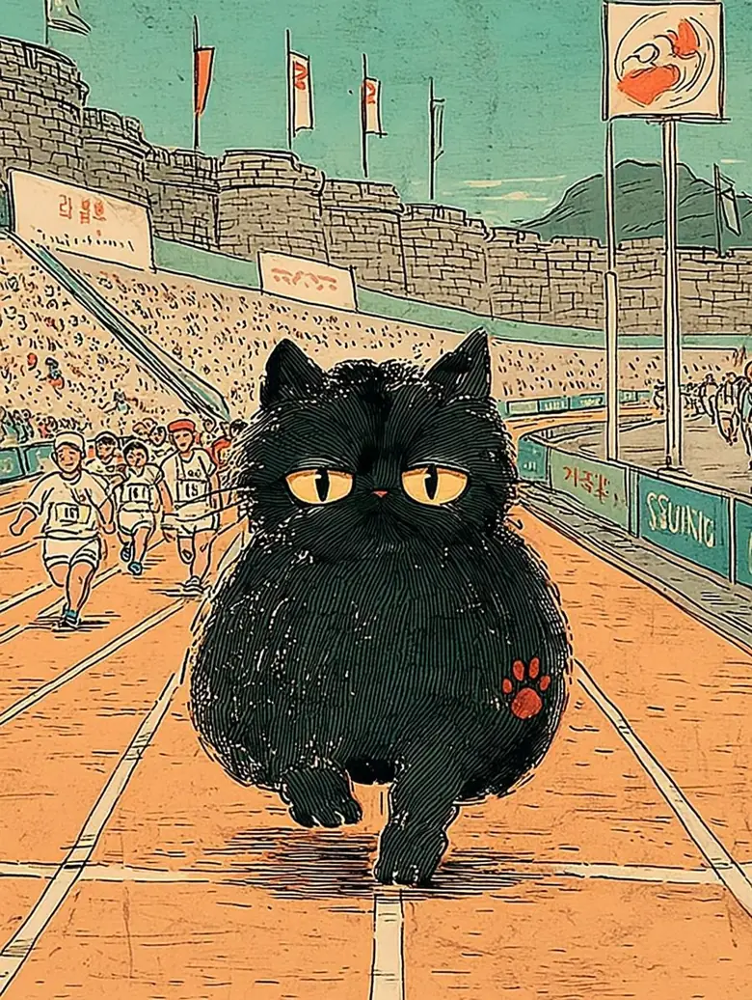
둘째 목숨 · 개를 피해서달려!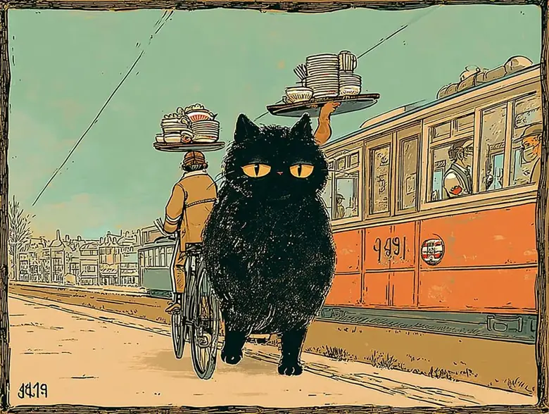
셋째 목숨 · 냉면 배달 자전거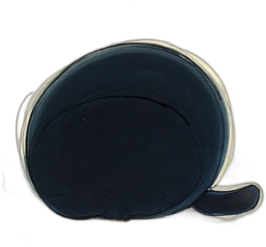
지금은 넷째 목숨목숨 하나 잃으면 하품 한 번.소문마다 연도가 수십 년씩 다르다 · 지어낸 이야기
사람을 차즘
수배 제268호 · 까만 고양이 한 마리
현상금 · 멸치 한 줌보신 분은 신문사 광고부로
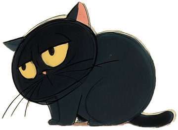
장소마다 도장을 찍으면 쪽지가 하나씩 생깁니다. 지어낸 이야기입니다.
10초 놀이